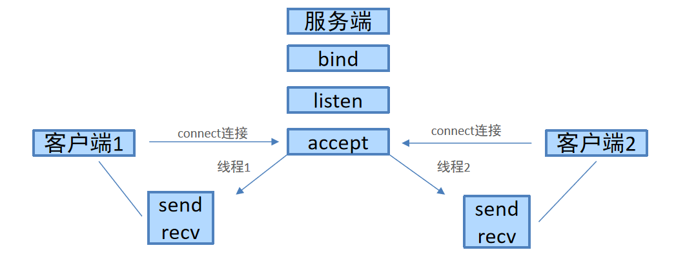

<!DOCTYPE lake>
<h3 data-lake-id="GJFZf" data-lake-index-type="2" id="GJFZf"><span data-lake-id="u81de41b4" id="u81de41b4" style="color: rgba(0, 0, 0, 0.87)">需求描述</span></h3><p data-lake-id="uea48bc74" id="uea48bc74"><span data-lake-id="u665b1fb0" id="u665b1fb0" style="color: rgba(0, 0, 0, 0.87)">目前我们开发的TCP服务端程序只能服务于一个客户端，如何开发一个多任务版的TCP服务端程序能够服务于多个客户端呢?</span></p><p data-lake-id="u176f52bf" id="u176f52bf"><span data-lake-id="u64728d4d" id="u64728d4d" style="color: rgba(0, 0, 0, 0.87)">完成多任务，可以使用</span><strong><span data-lake-id="u36ec2878" id="u36ec2878" style="color: rgba(0, 0, 0, 0.87)">线程</span></strong><span data-lake-id="ub3a26a1e" id="ub3a26a1e" style="color: rgba(0, 0, 0, 0.87)">，比进程更加节省内存资源。</span></p><h3 data-lake-id="SUQGr" data-lake-index-type="2" id="SUQGr"><span data-lake-id="u75481ff9" id="u75481ff9" style="color: rgba(0, 0, 0, 0.87)">实现步骤</span></h3><p data-lake-id="ucf105300" id="ucf105300"></p><ol list="u4efa051e"><li data-lake-id="u70c68649" fid="u6d4f2f74" id="u70c68649"><span data-lake-id="u6ffa8da8" id="u6ffa8da8" style="color: rgba(0, 0, 0, 0.87)">编写一个TCP服务端程序，循环等待接受客户端的连接请求</span></li><li data-lake-id="u46621303" fid="u6d4f2f74" id="u46621303"><span data-lake-id="u0e439f64" id="u0e439f64" style="color: rgba(0, 0, 0, 0.87)">当客户端和服务端建立连接成功，创建子线程，使用子线程专门处理客户端的请求，防止主线程阻塞</span></li><li data-lake-id="ue9018c49" fid="u6d4f2f74" id="ue9018c49"><span data-lake-id="uaaaaaf67" id="uaaaaaf67" style="color: rgba(0, 0, 0, 0.87)">把创建的子线程设置成为守护主线程，防止主线程无法退出，避免主线程结束时，子线程还在运行。</span></li></ol><h3 data-lake-id="pi83F" data-lake-index-type="2" id="pi83F"><span data-lake-id="u3201cc04" id="u3201cc04" style="color: rgba(0, 0, 0, 0.87)">示例代码</span></h3><span class="yuque-card-unsupported">[codeblock]</span><p data-lake-id="u64d2bd30" id="u64d2bd30"><br/></p><p data-lake-id="u92ff0942" id="u92ff0942"><strong><span data-lake-id="u5d697dee" id="u5d697dee" style="color: rgba(0, 0, 0, 0.87)">执行结果:</span></strong></p><span class="yuque-card-unsupported">[codeblock]</span><p data-lake-id="u66be8200" id="u66be8200"><br/></p><h3 data-lake-id="StcjF" id="StcjF"><span data-lake-id="u322f6aac" id="u322f6aac" style="color: rgba(0, 0, 0, 0.87)">4. 小结</span></h3><p data-lake-id="u93b17caa" id="u93b17caa"><span data-lake-id="u794e1cf4" id="u794e1cf4" style="color: rgba(0, 0, 0, 0.87)">编写一个TCP服务端程序，循环等待接受客户端的连接请求</span></p><span class="yuque-card-unsupported">[codeblock]</span><p data-lake-id="ub765f3d2" id="ub765f3d2"><br/></p><p data-lake-id="u95362000" id="u95362000"><span data-lake-id="u51e3b02e" id="u51e3b02e" style="color: rgba(0, 0, 0, 0.87)">当客户端和服务端建立连接成功，创建子线程，使用子线程专门处理客户端的请求，防止主线程阻塞</span></p><span class="yuque-card-unsupported">[codeblock]</span><p data-lake-id="uecbfd58c" id="uecbfd58c"><br/></p><p data-lake-id="uc1eb5fdd" id="uc1eb5fdd"><span data-lake-id="ubbd95c7f" id="ubbd95c7f" style="color: rgba(0, 0, 0, 0.87)">把创建的子线程设置成为守护主线程，防止主线程退出后，子线程不结束。</span></p><span class="yuque-card-unsupported">[codeblock]</span><p data-lake-id="ub9f16fae" id="ub9f16fae"><br/></p>